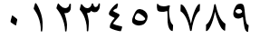

This page brings together basic information about the Arabic script and its use for the Modern Standard Arabic language. It doesn't cover Quranic usage. It aims to provide a brief, descriptive summary of the modern, printed orthography and typographic features, and to advise how to write Arabic using Unicode.
Select part of this sample text to show a list of characters, with links to more details.
Change size: 36px
المادة 1
يولد جميع الناس أحرارًا متساوين في الكرامة والحقوق. وقد وهبوا عقلاً وضميرًا وعليهم أن يعامل بعضهم بعضًا بروح الإخاء.
المادة 2
لكل إنسان حق التمتع بكافة الحقوق والحريات الواردة في هذا الإعلان، دون أي تمييز، كالتمييز بسبب العنصر أو اللون أو الجنس أو اللغة أو الدين أو الرأي السياسي أو أي رأي آخر، أو الأصل الوطني أو الإجتماعي أو الثروة أو الميلاد أو أي وضع آخر، دون أية تفرقة بين الرجال والنساء.
وفضلاً عما تقدم فلن يكون هناك أي تمييز أساسه الوضع السياسي أو القانوني أو الدولي لبلد أو البقعة التي ينتمي إليها الفرد سواء كان هذا البلد أو تلك البقعة مستقلاً أو تحت الوصاية أو غير متمتع بالحكم الذاتي أو كانت سيادته خاضعة لأي قيد من القيود.
The Arabic script is the 2nd most widely used script after Latin by number of countries, and 3rd by number of speakers (after Latin and Chinese). It used for writing the Arabic language and several other languages of Asia and Africa, such as Persian, Urdu, Azerbaijani, Pashto, Uighur, etc. Historically, it was used far more widely, as its spread followed that of Islam into many countries of not only West and Central Asia, and North Africa, but also Southern and Eastern Europe, South Asia, Malaysia, East Africa, etc.
The script was first used to write texts in Arabic, most notably the Qurʼān, the holy book of Islam. It descended from the Nabataean abjad, itself a descendant of the Phoenician script, and has been used since the 4th century for writing the Arabic language.
Many of the languages written in Arabic script are non-Semitic, and so employ very different sound systems from spoken Arabic. As a result the script has had to be adapted and is used slightly differently by speakers of different languages.
The Arabic script is an abjad. This means that in normal use the script represents only consonant and long vowel sounds. This approach is helped by the strong emphasis on consonant patterns in Semitic languages (however the Arabic script is also adapted for use with other kinds of language, such as Urdu, Uighur. and African ajami, not all of which are abjads). See the table to the right for a brief overview of the features of Standard Arabic.
Arabic text runs right-to-left in horizontal lines, but numbers and embedded Latin text are read left-to-right. ❯ direction
The script is cursive, and some basic letter shapes change radically, depending on what they join to. It is also very common for adjacent characters to ligate and to stretch to fill available space. Many of the characters share a common base form, and are distinguished by the number and location of dots or other small diacritics, called i'jam. For example, س ش ݜ ݰ ݽ ݾ ڛ ښ ڜ ۺ. ❯ shaping
There is no case distinction.
Words are separated by spaces (except some very short, usually 1-letter conjunctions and prepositions, which attach to the following word).
Modern Standard Arabic has 28 letters in its alphabet, but regularly uses 8 more. Most of those involve representations of the hamza, for which the usage is complicated. This page also lists 3 letters for foriegn sounds, and 6 others which are used infrequently. ❯ consonants
A mandatory ligature has to be used for combinations of lam + alif.
The orthography for the Arabic language is an abjad, and so vowels are written using a mixture of combining marks and letters in vocalised text, but normally the diacritics are not used (and so it is difficult to accurately read the text unless you recognise the consonant patterns). However these diacritics and other phonetic information can be written where needed, and are regularly used for Qur'anic texts, dictionaries, educational materials, and where the pronunciation needs to be made clear. ❯ vowels
The Arabic language uses 3 basic vowel diacritics, but 4 more and 1 letter are occasionally used. Long vowel locations are marked by matres lectionis (consonants indicating vowel locations).
In vowelled text, there is a diacritic to indicate the absence of a vowel in consonant clusters, and another diacritic to indicate gemination. ❯ novowel
Arabic uses both European and native digits, and has local forms for several of the more common punctuation marks. ❯ numbers ❯ inline
Joining forms
Because the Arabic script is 'cursive' (ie. joined-up) writing, letters tend to have different shapes depending on whether they join with adjacent letters or not (see cursive). In addition, vowels can be represented using different characters, depending on where in a word they appear.
In scripts such as Arabic, several characters have no left-joining form. In what follows we'll use the characters ي and د to illustrate shapes. The former can join on both sides, but the latter can only join on the right.
Left-joining glyphs are commonly called initial; dual-joining are called medial; and right-joining are called final. Glyphs that don't join on either side are called isolated. However, these glyph shapes can be found in various places within a single word.
Word-initial characters usually have initial glyph shapes (eg. 064A ). However, characters that only join to the right will use an isolated glyph shape (eg. 062F ).
Furthermore, words beginning with a vowel are always preceded by a vowel carrier, which is normally ا
(eg. 0627 06CC or 0627 064E ).
Word-medial characters will typically join on both sides
(eg. 064A ) but those that only join to the right will use a final glyph (eg. 062F ).
However, if either of those is preceded by another character that only joins to the right, the glyph shapes rendered will be initial (eg. 064A )
and isolated (eg. 062F ), respectively.
Word-final characters will typically use a final glyph shape (eg. 064A and 062F ).
However, if the previous character joins only to the right, they will use isolated glyph shapes (eg.064A and 062F ).
In all this contextual glyph shaping the basic shapes used for a character can vary significantly in a script like Arabic. This also includes some characters that only have ijam dots in certain contexts.
Click on the sounds to reveal locations in this document where they are mentioned.
Phones in a lighter colour are non-native or allophones. Source Wikipedia.
Vowel sounds
Plain vowels
The above chart is for 'Standard Arabic'. Even so, many regional variants of the standard pronunciation exist, not to mention local dialects.wp
o, oː and e, and eː are sometimes used for foreign words, and are sometimes introduced into speech as allophones due to regional dialects.
In addition, the adjacent consonants can also affect the vowel sounds. In particular, the sound a is retracted to ɑ around a neighboring r, q or emphatic consonants. æ is also a common allophone of a.wp
Most of the phonetic transcriptions for examples in this page therefore just use basic phonemic representations when it comes to vowels.
The diphthong aj is colloquially pronounced more like ej, however in this page we will continue to transcribe it phonetically per the official pronunciation.
Consonant sounds
labial
dental
alveolar
post-
alveolar
palatal
velar
uvular
pharyngeal
glottal
stops
pb
td
kɡ
q
ʔ
ejective
tˤdˤ
affricates
d͡ʒ
fricatives
fv
θð
sz
ʃʒ
xɣ
χʁ
ħʕ
h
ejective
ðˤ
sˤzˤ
nasals
m
n
approximants
w
lɫ
j
trills/flaps
r
Modern Standard Arabic covers many territories, most of which have their own dialects or languages, and these tend to influence the local pronunciation of Standard Arabic. In the chart above, we remain conservative, only mentioning variants that tend to apply to the standard pronunciation. For a slightly more detailed set of notes, see Wikipedia.
p and v are sometimes pronounced by some speakers for foreign words, such as
باكستانفيروس
Sometimes alternative letters are used for such words (see foreign).wp
Although most dialects include it as a phoneme, ɡ is only used in Modern Standard Arabic as a marginal phoneme to pronounce some dialectal and loan words.wp
The sound ɫ occurs as a phoneme in a handful of loanwords, though not in all pronunciations. It also occurs in the name
اللّٰه
The sound, d͡ʒ is used in Algerian, Hejazi, Najdi, Iraqi, and Gulf regions, whereas ʒ is used in Moroccan, Tunisian, Egyptian, Levantine, and Israeli regions. In both cases, the sound is written using ج [U+062C ARABIC LETTER JEEM].wp,#Local_variations_of_Modern_Standard_Arabic
The following notes on structure are taken from Wikipedia.wp,#Phonotactics
[C1] [S1] V [S2] [C2 [C3]]
Legend
C
Consonant.
V
Vowel.
S
Semi-vowel.
Arabic syllable structure consists of an optional syllable onset, consisting of one or two consonants; an obligatory syllable nucleus, consisting of a vowel optionally preceded by and/or followed by a semivowel; and an optional syllable coda, consisting of one or two consonants.
The following restrictions apply:
Onset
C1 can be any consonant, including a liquid (l r). The onset is composed only of one consonant; consonant clusters are only found in loanwords. Sometimes an epenthetic a is inserted between consonants.
Nucleus
Includes S1 V S2.
Coda
C2 and C3 can be any consonant.
Vowels
Vowel summary
The following table summarises the main vowel to character assigments, in both vowelled and unvowelled forms.
Each table cell shows word-initial, word-medial, and word-final forms from right to left. The glyphs shown are illustrative; alternative shapes may occur (see joining_forms). Click/tap on items to see a list of the components for that cell.
Because the sukun is also dropped in non-vocalised text, where a mater lectionis remains it only implies a vowel location, since it may either represent a consonant or a glide.
In word-initial position vowels are attached to ا. However, more often than not, a hamza is also attached to the alef to indicate the glottal stop. Although this actually constitutes a consonant plus vowel, in unvocalised text the alef (plus any hamza) signals the location of a vowel. The table therefore shows these maximal combinations.
The sounds eː, o, and oː are only used for transliterations of foreign words, and are spelled identically to iːu, and uː, respectively.
The letter ى, used as an alternative for a final aː, is a dedicated vowel character (see vletter).
This is the full set of characters needed to represent the Arabic language vowels, including the alef+hamza combinations. The last 3 combining marks are only found in decomposed text.
ا␣أ␣إ␣ٱ␣آ␣و␣ي␣ى␣ْ␣َ␣ُ␣ِ␣ٰ␣ً␣ٌ␣ٍ␣ٓ␣ٔ␣ٕ
Ijam and tashkil
The Unicode Standard makes an important distinction between ijam and tashkil diacritics, which is particularly relevant for this section about vowels. For more information, see Ijam, tashkil, hamza.
Vowel letters
Alef maksura
ى
0649 represents aː at the end of many words when it is written with YEH instead of an ALEF. In this case, YEH has no dots below, and this code point produces the requisite shape. It is the only letter used for vowels alone.
حتى
It also produces aː in informal speech for some words that end with nunation (though formally the ending is pronounced -an).
معنى
If any suffix is added, the spelling reverts to the normal alef, eg.
معناهمmæʕnaː-hum
Matres lectionis
ا␣و␣ي
In Arabic, the consonants listed just above may indicate the location of a long vowel, eg. قلوبتاريخ They are always visible, whether or not the text shows vowel diacritics.
Many Arabic words begin with a glottal stop followed by a vowel, which can be indicated using the characters listed above. Strictly speaking, they represent consonants, although, like the matres lectionis, they strongly imply the presence of a vowel.
Alef alone or with wasla. When ا appears on its own it represents a vowel that will usually be elided if it doesn't appear at the beginning of a sentence (but the spelling doesn't change). Before ل it is usually part of the definite article and is pronounced a (see also defarticle), and otherwise it is usually pronounced i. Note that Arabic words do not begin with onset clusters, so borrowed words will often add this vowel to the start of the word, but it is also used for various grammatical forms of words.
المدير
اسم
In classical Arabic, this behaviour was indicated using the wasla diacritic, ie. as ٱ. In modern text, however, this is rarely seen.
أنت المدير
ما ٱسمك
Alef with hamza. In the majority of cases, the alef also carries a hamza that indicates that the glottal stop and vowel are always pronounced. The list of characters above shows 4 variant forms of this. أ can be followed by a(ː) or u(ː), whereas i(ː) (and only that vowel) follows إ.
In situations where it is necessary to unambiguously indicate the underlying vowel sounds, short vowels can be expressed using diacritics called harakat, eg. العَرَبِيَّة
However for languages such as Arabic, Persian and Urdu they are typically not used unless there is a particular need to help the reader understand the pronunciation. The previous example would therefore usually be written العربية
On the other hand, when the script is used for some other languages (such as Uighur, Kashmiri, or Hausa), all vowels are shown, as a matter of course. These diacritics are also used in the Qur'an (though not originally), to reduce ambiguity.
Basic harakat
The basic short vowel marks in the Arabic language repertoire are:
َ␣ُ␣ِ
Although the phonemic distinctions for Arabic involve only 3 vowel sounds, the phonetic realisation often varies with context. For example, vowel_mappings includes e and o sounds, which can be found in a few foriegn loan words.
Tanwīn
Tanwin refers to a secondary set of vowel diacritics with origins in classical Arabic, where indefinite nouns, and adjectives were marked by a final n-sound, called تنوينtænwiːn or, in English, 'nunation'. This is indicated by visually doubling the vowel diacritic, but there are precomposed Unicode characters for each combination.
ً␣ٌ␣ٍ
In modern text this is particularly common for adverbs.jm,51
After a final YEH, the pronunciation has an extra j sound,jm,51 ie. -iːjan, eg.
رَسْمِيًا
In modern Arabic printing the fathatan may be dropped, but the alef is retained.
The other two diacritics are much less common.jm,51
Superscript alef
ٰ
ٰ [U+0670 ARABIC LETTER SUPERSCRIPT ALEF] is used in only a few Arabic words, however they tend to be commonly used words. It represents the sound aː.
هٰذَا
اللّٰه
Diphthongs & glides
The 2 diphthongs aj and aw are written using a combination of short a with the semivowels ي [U+064A ARABIC LETTER YEH] and و [U+0648 ARABIC LETTER WAW],wp,#Vowels. In vocalised text this usage can be detected by the presence of sukun, but in non-vocalised text it is not so obvious.
عين
عود
Multipart vowels
The 5 multipart vowels listed here only appear in vocalised text. Three represent long vowels, where the vowel diacritic is followed by a letter. Two more represent standalone vowels, with alef used as a carrier for the vowel diacritics. Diphthongs and glides are not included here.
Click on the letters for examples.
ِي␣ُو␣َا␣اِ␣اَ
Standalone vowels
ا
In principle, Arabic has very few true standalone vowels, since vowels are nearly always preceded by a glottal stop or other consonant. However, when ا appears without any hamza diacritic at the beginning of a sentence, it may be pronounced a, for the definite article, or i in various other circumstances.
When preceded by another word these sounds are elided, although the spelling remains unchanged.
Long vowels are generally distinguished from short vowels by the use of matres lectionis (see matres).
Nasalisation
Nasalisation is not a phonemic feature of Arabic.
Tones
Arabic is not a tonal language.
Vowel absence
ْ
When text is vowelled, ْ [U+0652 ARABIC SUKUN] can be used over a consonant to indicate that it is not followed by a vowel sound. Like other vowel diacritics, this is typically not used in modern text, unless it is necessary to clarify pronunciation.
مكتب
Vowel sounds to characters
This section maps Modern Standard Arabic vowel sounds to common graphemes in the Arabic orthography.
The columns run right to left and indicate typical word-initial, word-medial, and word-final usage. The joining forms shown are illustrative; alternative shapes may occur (see joining_forms). They are also fully-vowelled, although the examples show normal unvowelled usage as well as vowelled.
Click on a grapheme to find other mentions on this page (links appear at the bottom of the page). Click on the character name to see examples and for detailed descriptions of the character(s) shown.
Sounds listed as 'infrequent' are allophones, or sounds used for foreign words, etc.
The main Unicode Arabic block contains 153 letters, with 77 more in the extended blocks. As shown in the previous section, only a small subset of those are used to write a given language. The others represent special characters added to the repertoire for one or other of the many languages for which the Arabic script is used.
The vast majority of letters represent consonants. A few represent long vowels.
The following consonant letters are those generally recognised as constituting the alphabet for the Standard Arabic language.
The recognised alphabet also includes 0627, although that is generally used in the context of vowels (see alef). 0648 and 064A can also represent long vowel locations or combinations of consonant plus vowel (see matres).
Supplementary letters
Other Unicode letters regularly used in Arabic include:
ء␣آ␣أ␣إ␣ؤ␣ئ␣ى␣ة
Most of the above letters with diacritics decompose in Unicode Normalization Form D (NFD), however 0629 does not.
Alef
ا
Formally speaking, 0627 has no sound of its own. It is really a vowel lengthener and carrier. Its main uses in arabic orthography are:
as a carrier letter for a word-initial vowel, eg.
الآن
انتباه
as a lengthening sign for the a-vowel, eg. بارد
as a carrier letter for the hamza (see 0623, 0625, 0622, and 0671).
That said, its presence usually indicates the location of a vowel.
It also has one or two minor functions such as in conjunction with tawiin (nunation) (see 064B).
Certain parts of the arabic verb end in a long u-vowel that is conventionally written with a following alef that has no effect on pronunciation, eg. كتبواktbwɑkætæbuːThe alef is omitted if a suffix is added, eg. كتبوهاktbwhɑkætæbuː-haa
Hamza
ء␣أ␣إ␣ؤ␣ئ␣آٔ␣ٕ
0621 represents the glottal stop sound. For historical reasons, it is treated as an orthographic sign rather than as a letter of the alphabet. It sometimes stands alone, but usually appears with a 'carrier' letter - ALEF, WAW, or YEH for which separate precomposed characters are available in Unicode ( أ إ ؤ ئ ). Examples of use include أنكرنائمبناء
In modern printed arabic, the hamza is rarely shown when it occurs at the beginning of a word, but may appear in conjunction with another character. When the hamza is above another character you should typically use ٔ[U+0654 ARABIC HAMZA ABOVE] with the appropriate base character, although there are a number of exceptions, and for the Arabic language all the needed combinations are available as precomposed characters. For more details, see the character description.
Classical arabic distinguishes between 'cutting' and 'joining' hamza. 'Cutting' means always pronounced, 'joining' means frequently elided. The joining hamza is of little practical importance in modern arabic pronounced without the old case endings. When it does appear in modern Arabic, 0671 is used to indicate a joining hamza.
Alef madda
0622 is used when either of the two following combinations of glottal stop and a vowel appear in a word:
ʔaʔ (hamza, short a, hamza) eg. آثار
ʔaː (hamza, long a) eg.
القرآن
Normal pronunciation in both cases is ʔaː.
The madda sign is still very often shown in print.
However, it is sometimes pronounced t in specific grammatical contexts.
It is used for historical reasons to indicate the feminine ending, a, and is only used in final position. The dots are borrowed from 062A. If any suffix is added, the ending is spelled with that letter, eg.
مَدْرَسَتْنَا
In modern Arabic it is not uncommon to find the two dots omitted, particularly on masculine proper names that have the feminine ending, eg.
طلبه
Vowelled text may omit the short a diacritic before the TEH MARBUTA, because the sound is always the same.
Letters for foreign sounds
The following characters are not part of the standard Arabic language set but are occasionally used to represent foreign sounds.
ڤ␣پ␣چ
Two of the above are borrowed from Persian/Urdu.
Other letters
The following characters also have the general property of Letter, but are less commonly used for modern Arabic language text.
ڢ␣ڧ␣ࢲ␣ـ␣ٱ
06A2 and 06A7 are alternative forms that are used in Northwest Africa. 08B2 is used for Berber.
0671 is described in the section hamza. Whereas many of the above letters with diacritics decompose in Unicode Normalization Form D (NFD), this letter does not.
0640 is used to stretch words for simple justification, or to make a word or phrase a particular width, or as a form of emphasis. For more information see justification.
Word ligatures in the Presentation Forms block
Characters in the Arabic Presentation Forms blocks should not normally be used, but they contain just a few characters that are not just for compability use, including the following, which have compatibility decompositions but which are sometimes used as regular characters. See also presentationForms.
ﷲ␣ﷴ␣ﷺ␣ﷻ
FDF2 is used to write the name of Allah. The composition of this character differs from font to font in terms of glyph forms. With some fonts it is necessary to add diacritics, whereas with others it is not.
The other characters represent honorifics or common phrases. Click on the character glyphs in the list above for descriptions.
Arabic definite article
The pronunciation of ال (alif followed by lām) varies when it represents the Arabic definite article.
The lām is not pronounced if it precedes one of the following characters, but instead the following sound is doubled, eg.
السلام علیکم
ت␣ث␣د␣ذ␣ر␣ز␣س␣ش␣ص␣ض␣ط␣ظ␣ل␣ن
These are called 'sun letters' in Arabic. The other letters are 'moon letters'.j,32
The alif is also not pronounced if the preceding word ends with a vowel or h. It is, however, written.j,32
Onsets
TBD
Finals
Final consonants in Arabic are simply written using ordinary consonant letters.
Consonant clusters
Consonant clusters in Arabic are simply written using a sequence of consonant letters. In vowelled text the consonant(s) without a following vowel may carry a sukun (see novowel).
Consonant length
The diacritic ّ [U+0651 ARABIC SHADDA] doubles the value of the consonant it is attached to, which is phonemically significant in Arabic, eg.
تجّار
Like the short vowels, it, too, is not often used, although sometimes it appears when vowel signs don't.
When both shadda and kasra are attached to the same base consonant, a common, though not universal, practice is to display the kasra below the shadda, rather than below the base consonant, eg. مُمَثِّلْ Some fonts, such as Amiri, don't do this. (See also gpos.)
Consonant sounds to characters
This section maps Modern Standard Arabic consonant sounds to common graphemes in the Arabic orthography.
Click on a grapheme to find other mentions on this page (links appear at the bottom of the page). Click on the character name to see examples and for detailed descriptions of the character(s) shown.
Sounds listed as 'infrequent' are allophones, or sounds used for foreign words, etc.
Stops
p
Used only for foreign words.
0628
باريس
062806280628 ⏴
067E
پاريس (from Persian/Urdu).
067E067E067E ⏴
b
0628
بيت
062806280628 ⏴
t
062A
تلك
062A062A062A ⏴
d
062F
ديوان
062F062F ⏴
tˤ
0637
طريق
063706370637 ⏴
dˤ
0636
ضمان
063606360636 ⏴
k
0643
كيف
064306430643 ⏴
q
0642
قدم
064206420642 ⏴
ʕ
0621
بناء
0621 ⏴
0622
آب
06220622 ⏴
0623
أول
06230623 ⏴
0625
إدارة
06250625 ⏴
0624
رؤوس
06240624 ⏴
0626
رئيس
06260626 ⏴
Affricate
t͡ʃ
Used only for foreign words.
0686 (from Persian/Urdu)
068606860686 ⏴
d͡ʒ
062C
جبل
062C062C062C ⏴
0686 (from Persian/Urdu) in Egypt for foreign names.
Characters in the Arabic Presentation Forms blocks that are not just for compability use include the following. Click on the characters in the list for more information.
Other characters in the Arabic Presentation Forms blocks that are not just for compability use include the following symbols that can be used for pedagogical purposes. In educational materials there is sometimes a need to show pictures of the dots and marks used to distinguish Arabic characters, particularly the ijam. These code points provide for that use case. They are never used as combining marks, nor in composition with Arabic letter forms, but are simply symbols.
The combination ل + ا [U+0644 ARABIC LETTER LAM + U+0627 ARABIC LETTER ALEF] is always written as a ligature. The underlying code points are, however, preserved. The form of this ligature that joins to the right is لاand unjoined it is لا
Observation: When diacritics are used with this ligature, they sometimes appear to be over the ALEF, rather than over the LAM, eg. قليلاً This would require a typing order that is different from the spoken sequence.
Other combinations of characters are likely to also ligate (see gsub). The number of ligatures in text typically depends on the font used, but ligation can also be used as a device to manage justification, in which case it needs some degree of manual control
Formatting characters
Modern Arabic text makes use of a relatively large set of invisible formatting characters, especially in plain text, many of which are used to manage text direction. Descriptions of these characters can be found in the following sections:
The code points in the Unicode blocks Arabic Presentation Forms-A and Arabic Presentation Forms-B provide positional forms of Arabic letters and ligatures. They should not be used for ordinary text. Those code points are provided for compatibility with legacy code pages, and have (compatibility) character decomposition mappings. Normally, Arabic text should be written with code points from the main Arabic block and its extensions; positional forms are dealt with by the font and rendering algorithms.
However, there are some exceptions to this rule, which are listed here. These characters are not included in the Unicode repertoire for compatibility but may be used in Arabic texts, in their own right.u,398-400 They normally don't have character decomposition mappings. (See also Arabic ‘presentation form’ exceptions.)
a set of ijam dots for pedagogical use, see ijamSymbols
Honorific combining marks
In addition to the honorifics described earlier, the basic Arabic block has a small number of corresponding combining marks. Click on the characters in the list below for more details.
A set of arabic-indic digits are typically used in Middle Eastern and Gulf countries, whereas North African countries tend to use European digits. In neither area, however, is one digit style used exclusively.
The Unicode bidi_class property for these native digits is Arabic_Number, which makes them behave differently from ASCII digits, and differently from the set of extended digits used for Persian, Urdu, etc. For more information, see expressions.
The CLDR standard-decimal pattern is #,##0.###. The standard-percent pattern is #,##0% or #,##0٪.c
See also expressions about directional implications for handling expressions or sequences of numbers.
Extended-Arabic digits. Still in the basic Unicode Arabic block, as mentioned, there is a second set of digits in Unicode for use in languages such as Persian and Urdu.
۰␣۱␣۲␣۳␣۴␣۵␣۶␣۷␣۸␣۹
The glyph shapes are typically different for 3 of the digits (although not always the same 3 digits) in Persian, Urdu and Sindhi.
Arabic

Persian
Urdu
Sindi
Arabic-indic numerals, as used in Arabic, Persian, Urdu and Sindhi language text.
Currency
Unicode has a character for the rial: ﷼.
Text direction
Arabic text is written horizontally and right-to-left in the main but, as in most right-to-left scripts, numbers and embedded text in other scripts are written left-to-right (producing 'bidirectional' text).
Arabic words are read right-to-left, starting from the right of this line, but numbers and Latin text (highlighted) are read left-to-right.
The Unicode Bidirectional Algorithm automatically takes care of the ordering for all the text in fig_bidi, as long as the 'base direction' is set to RTL. In HTML this can be set using the dir attribute, or in plain text using formatting controls.
If the base direction is not set appropriately, the directional runs will be ordered incorrectly as shown in fig_bidi_no_base_direction, making it very difficult to get the meaning.
The exact same sequence of characters with the base direction set to RTL (top), and with no base direction set on this LTR page (bottom). Certain items are highlighted to help track their position.
For authoring HTML pages, one of the most important things to remember is to use <html dir="rtl" … > at the top of the page. Also, use markup to manage direction, and do not use CSS styling.
Managing text direction
Unicode provides a set of 10 formatting characters that can be used to control the direction of text when displayed. These characters have no visual form in the rendered text, however text editing applications may have a way to show their location.
In Unicode 6.1, the Unicode Standard added a set of characters which do the same thing but also isolate the content from surrounding characters, in order to avoid spillover effects. They are [U+2067 RIGHT-TO-LEFT ISOLATE] (RLI), [U+2066 LEFT-TO-RIGHT ISOLATE] (LRI), and [U+2069 POP DIRECTIONAL ISOLATE] (PDI). The Unicode Standard recommends that these be used instead.
There is also [U+2068 FIRST STRONG ISOLATE] (FSI), used initially to set the base direction according to the first recognised strongly-directional character.
[U+200F RIGHT-TO-LEFT MARK] (RLM) and [U+200E LEFT-TO-RIGHT MARK] (LRM) are invisible characters with strong directional properties that are also sometimes used to produce the correct ordering of text.
This section is about sequences of numbers, rather than a sequence of digits. Sequences of numbers are sets of numbers separated by punctuation or spaces, such as 10–12–2022. Sequences of digits, such as 123, in Arabic text run LTR automatically.
A sequence of numbers used to express a range of values generally runs right to left in the Arabic language (and languages using the Thaana or Syriac scripts), whereas for Persian language text (and in Hebrew, N’Ko or Adlam scripts) it runs left to right.
This also tends to apply to expressions such as 1 + 2 = 3.
fig_range_ar shows Arabic text which is right-to-left overall, containing an ASCII-digit numeric range that is also ordered RTL, ie. it starts with 10 on the right and ends with 12 on the left.
A numeric range in Arabic language text.
In Persian, however, the sequence would generally run LTR, so 10 would be on the left, and 12 on the right. The underlying order of the characters that make up the expression, and the order in which they are typed, remain the same. (Click on each figure to see the underlying character sequences.)
A numeric range in Persian language text.
However, the preferred order for a sequence of numbers may also depend on the context. For ISBN numbers, telephone numbers, and so forth, a left-to-right sequencing is likely to be preferred.
The default direction for a sequence in an application that implements Unicode fully will depend on:
the digits used (ASCII, Arabic or Extended Arabic),
whether or not the sequence is preceded by Arabic script text, and
the separators used.
Contextual factors for Arabic
The table below shows default sequence orders for Arabic text, with separators drawn from 4 different Unicode bidi_class properties. The base direction in all cases is RTL. The coloured items are LTR sequences; the black sequences run RTL.
The ASCII digits have the bidi property European_number, and the Arabic digits have the property Arabic_number.
If you add spaces after any separator (such as the solidus on the right), the order will be RTL, per the left-hand column.
Hyphen (U+2010), en-dash, and 5,500+ other code points
Hyphen-minus (U+002D), minus sign, plus sign, +9 more
Solidus, Arabic comma, comma, full stop, colon, nbsp, +9 more
Bare ASCII
12 34 56
12‐34‐56
12-34-56
12/34/56
Bare native
١٢ ٣٤ ٥٦
١٢‐٣٤‐٥٦
١٢-٣٤-٥٦
١٢/٣٤/٥٦
ASCII after Arabic
ن 12 34 56
ن 12‐34‐56
ن 12-34-56
ن 12/34/56
Native after Arabic
ن ١٢ ٣٤ ٥٦
ن ١٢‐٣٤‐٥٦
ن ١٢-٣٤-٥٦
ن ١٢/٣٤/٥٦
Controlling the direction for Arabic
Changing the direction of the bare ASCII digits with ASCII hyphen. If you have a line that only contains digits the direction for the sequences varies, depending on whether the digits are ASCII (European_Number) or Arabic (Arabic_number).
If you want the ASCII digit sequence to run RTL (eg. for a range) you need to start the line with the formatting character [U+061C ARABIC LETTER MARK] (ALM). This is effectively an invisible Arabic script character. The required order cannot be achieved by simply setting the base direction, nor by using [U+200F RIGHT-TO-LEFT MARK]. It has to be ALM.
An alternative would be to use ‐ [U+2010 HYPHEN] or – [U+2013 EN DASH] instead, since they have a different bidi class.
Making other sequences run LTR. Sequences using most other separators, such as the non-ASCII hyphen, run RTL by default in RTL text. This is appropriate for ranges in Arabic, but not for ISBN numbers, telephone numbers, etc. To make these run LTR, you can either precede the sequence with a [U+200E LEFT-TO-RIGHT MARK] (LRM), or set the base direction of the sequence to LTR using markup or formatting characters.
Making Common_separator sequences run RTL. Sequences separated by commas (ASCII and Arabic), full stops, colons, and no-break spaces run LTR and are resistant to change. The direction cannot be changed using RLM or by changing the base direction. Which means that, for example, if you want the components of numeric dates to be ordered RTL, you should avoid using these separators. (Although, surrounding the separators by a space would produce the RTL direction, eg. compare 12/34/56 and 12 / 34 / 56, where the only difference is the addition of spaces.)
Alphanumeric sequences. Some sequences, such as MAC addresses, contain a mixture of numbers and letters. The strong directionality of the letters influences the resulting order, and so these sequences are best managed by explicitly setting the base direction.
Contextual factors for Persian
Although we are describing Arabic here, it may also be useful to include data for Persian to allow for comparison.
This table is the same as the Arabic table, except for the cell that is the junction of European_separator and native Arabic digits. This is because the native digits are from the Extended Arabic-indic range, and have a bidi_class property of European_number, like the ASCII digits.
Hyphen (U+2010), en-dash, and 5,500+ other code points
Hyphen-minus (U+002D), minus sign, plus sign, +9 more
Solidus, Arabic comma, comma, full stop, colon, nbsp, +9 more
Bare ASCII
12 34 56
12‐34‐56
12-34-56
12/34/56
Bare native
۱۲ ۳۴ ۵۶
۱۲‐۳۴‐۵۶
۱۲-۳۴-۵۶
۱۲/۳۴/۵۶
ASCII after Arabic
ن 12 34 56
ن 12‐34‐56
ن 12-34-56
ن 12/34/56
Native after Arabic
ن ۱۲ ۳۴ ۵۶
ن ۱۲‐۳۴‐۵۶
ن ۱۲-۳۴-۵۶
ن ۱۲/۳۴/۵۶
Glyph shaping & positioning
This section brings together information about the following topics:
writing styles;
cursive text;
context-based shaping;
context-based positioning;
baselines, line height, etc.;
font styles;
case & other character transforms.
Arabic orthographies can be grouped into a number of writing styles, some of which are more common for particular languages, while others can be used interchangeably for the same language. Sometimes the variations are adapted to usage, for example book text vs. inscriptions; sometimes the variants reflect regional, cultural or stylistic calligraphic preferences.
The different styles include Naskh, Nasta'liq, Ruq'a, Thuluth, Taʻlīq, Kufi, Diwani, Maghribi, Kano. The examples in this page use a naskh writing style. For a brief introduction to font styles, with examples, see the following pages: Text layout requirements for the Arabic script, the home page of arabicfont.org, and
The naskh writing style is the most prominent style for the Arabic language, and has become the default form of Arabic language content in most contexts. It has clearly distinguished letters, which make it easy to read, and can be written in small sizes.
Arabic is commonly written in the naskh writing style.
The ruq’ah writing style was designed for use in education, in official documents, and for every-day writing. It is known for its clipped letters composed of short, straight lines and simple curves, as well as its straight and even lines of text. It is a functional style of writing that is quick to write and easy to read. It also doesn’t extend baselines, like a naskh font does. In 2010's rebranding of Amman a ruq'ah font family was created to serve as an italic face. Monotype has an interesting article on the development of ruq'ah.
The Waseem font released with Mojave OS is based on the ruq'ah style.
The nasta’liq writing style is the standard way of writing Urdu and Kashmiri, and is also often a preferred style for Persian text. Key features include a sloping baseline for joined letters, and overall complex shaping and positioning for base letters and diacritics alike. There are also distinctive shapes for many glyphs and ligatures.
The same Arabic language text rendered with the Awami Nastaliq font.
The kano writing style is a common way of writing Hausa in Nigeria in the ajami script, and like other East African writing it is based on Warsh (Warš) forms, which incorporate Maghribi characteristics. Some sources describe an alternative Hafs (Ḥafṣ) orthography, used with hand-written adaptations for the newspaper Al-Fijir.
The same Arabic language text rendered with the Alkalami font.
The kufi writing style is the original style used for the Koran, but is not used for newspapers or official content today. However, it is used in modern content for logos and other stylised applications.
The same Arabic language text rendered with the KufiStandardGK font.
Arabic script is always cursive, ie. letters in a word are joined up. Fonts need to produce the appropriate joining form for a letter, according to its visual context, but the code point used doesn't change. This results in four different shapes for most letters (including an isolated shape). Ligated forms also join with characters alongside them.
The highlights in the example below show the same letter, ع[U+0639 ARABIC LETTER AIN], with three different joining forms.
The letter ع (ain) in 3 different joining contexts.
Most Arabic script letters join on both sides. A few only join on the right-hand side: this involves 4 basic shapes for Modern Standard Arabic.
Most dual-joining characters add or become a swash when they don't join to the left. A number of characters, however, undergo additional shape changes across the joining forms. fig_joining_forms and fig_right_joining_forms show the basic shapes in Modern Standard Arabic and what their joining forms look like. Significant variations are highlighted.
isolated
right-joined
dual-join
left-joined
MSA letters
ب
ـب
ـبـ
بـ
ب␣ت␣ث␣پ
ن
ـن
ـنـ
نـ
ن
ق
ـق
ـقـ
قـ
ق
ف
ـف
ـفـ
فـ
ف␣ڤ
س
ـس
ـسـ
سـ
س␣ش
ص
ـص
ـصـ
صـ
ص␣ض
ط
ـط
ـطـ
طـ
ط␣ظ
ك
ـك
ـكـ
كـ
ك
ل
ـل
ـلـ
لـ
ل
ه
ـه
ـهـ
هـ
ه␣ة
م
ـم
ـمـ
مـ
م
ع
ـع
ـعـ
عـ
ع␣غ
ح
ـح
ـحـ
حـ
ح␣خ␣ج␣چ
ي
ـي
ـيـ
يـ
ي␣ئ␣ى
Joining forms for shapes that join on both sides..
isolated
right-joined
MSA letters
ا
ـا
ا␣أ␣إ␣آ␣ٱ
ر
ـر
ر␣ز
د
ـد
د␣ذ
و
ـو
و␣ؤ
Joining forms for shapes that join on the right only.
Managing glyph shaping
[U+200D ZERO WIDTH JOINER] (ZWJ) and [U+200C ZERO WIDTH NON-JOINER] (ZWNJ) are used to control the joining behaviour of cursive glyphs. They are particularly useful in educational contexts, but also have real world applications.
ZWJ permits a letter to form a cursive connection without a visible neighbour. For example, the marker for hijri dates is an initial form of heh, even though it doesn't join to the left, ie. ه. For this, use ZWJ immediately after the heh, eg. الاثنين 10 رجب 1415 ه..
ZWNJ prevents two adjacent letters forming a cursive connection with each other when rendered. For example, it is used in Persian for plural suffixes, some proper names, and Ottoman Turkish vowels. Ignoring or removing the ZWNJ will result in text with a different meaning or meaningless text, eg, تنها is the plural of body, whereas تنها is the adjective alone.2 The only difference is the presence or absence of ZWNJ after noon.
͏ [U+034F COMBINING GRAPHEME JOINER] is used in Arabic to produce special ordering of diacritics. The name is a misnomer, as it is generally used to break the normal sequence of diacritics.
Context-based shaping & positioning
Context-based shaping
See just above for shaping related to cursive joining.
In all but the most basic fonts, glyph shapes are highly variable for Arabic letters. For example, fig_mishafi_ka shows a wide variety of shapes produced by default in the Mishafi font for ك [U+0643 ARABIC LETTER KAF] when followed by various letters.
Glyph variation in the Mishafi font.
Teeth letters
A good font will constantly change the shape of glyphs slightly so as to create a more aesthetically pleasing, and in some cases a more easily readable, flow.
Three examples where the same letter is repeated, but the glyph shapes differ.
teeth_letters shows an example where the same word is displayed using different fonts.a,#h_teeth_letters The font on the left applies rules to distinguish the letter bases clearly. Note, in particular, that although there are 3 letters which are repeated, none of those letters uses the same shape twice.
The same word in two different fonts (Mishaf and Scheherazade).
Special joining forms
In more traditional fonts, you will also often see the join between certain characters above the baseline. Compare the highlighted character joins in fig_raised_joining, showing the same sequence of letters but with joins above vs. along the baseline. (The first font is Mishafi, and the second Scheherazade New.)
Font-based differences in joining.
But actually a good font will typically have a range of shapes and placements for a given letter, depending on the adjoining letter. This is illustrated in noon_joining_forms.a,#multi-context-joining
Various different forms for the initial letter noon,
Characters within a word may also combine vertically in certain groupings. See the example in vertical_joining.
Vertically arranged letters in a word.
Ligatures
Ligated glyph forms are common in Arabic. Some, such as لا are mandatory. Most of the remainder depend on the font style. The lam-alif ligature also affects other characters that are based on the alif, such as for لإ لأ لآ.
Traditional fonts tend to have more optional ligated forms than modern styles.
vs.
The same word with ligatures (right) and no ligatures (left).
Ligatures are often used to manage justification. Since they generally reduce the horizontal width of a word, they can be used to fit more text on the end of a line, or balance baseline stretching.
Context-based positioning
When vowel or shadda diacritics are used they can be placed in different positions, according to the context.
The position of the shadda diacritic depends on the height of the base character in many fonts.
When both shadda and vowel signs are combined with a base character, a more complicated set of rules may be applied. Depending on the font used, some vowel diacritics may be placed relative the shadda diacritic, rather than relative to the base character.
When kasra and shadda diacritics appear together, the kasra may be below the base character (right), or below the shadda (left), depending on the font.
Arabic text does use slanting letters. In some cases the letters may be slanted to the left as in fig_font_style_italic.
The text just below this newspaper title leans to the left.
Case & other character transforms
Arabic has no case distinction.
However, as mentioned in numbers, Arabic sometimes uses ASCII digit glyphs and other times uses local digit glyphs. Some fonts and authoring applications allow you to choose which glyph shapes to use for the same underlying characters.
Arabic fonts may also have alternative shapes for glyphs, which can be turned on in certain circumstances. For example, some fonts have a set of swash forms for certain characters, which can be used for justification, or just for effect.
The jalt table in the Arabic Typesetting font contains alternative elongated forms. (source)
Graphemes
Grapheme clusters
In most cases Arabic text uses precomposed characters and omits vowels. Therefore grapheme boundaries are consistent with individual letters. Where this is not the case, the additions are combining marks, and the Unicode grapheme cluster is designed to span combinations of base character plus any number of following combining marks.
Larger typographic units
One potential complication is that fonts often render sequences of characters as ligated forms. The ligated forms are a font-specific feature, whereas grapheme clusters are based on code point sequences: some fonts may display the same sequence of characters without a ligated form. Most applications tend to move character by character through the text, producing situations like the cursor position in fig_gc_ligature_cursor.
The cursor positioned between k and m in the ligated form for كماkmɑ. (source)
This approach allows for easy deletion or insertion of any component of a ligated form.
Many Brahmi-derived scripts are segmented by units that incorporate more than one grapheme cluster, for operations such as in-word line-breaking, justification, letter-spacing, and initial letter highlighting. It is not clear whether such typographic units are needed for Arabic language text, since there is usually no hyphenation, and no initial letter highlighting, and letter-spacing and justification follow quite different rules, extending the baseline. It may be worth looking at the very rare examples of vertically-set lines with upright Arabic letters to check whether ligatures like lam-alif or others are kept together. (My expectation is that lam-alif is not split, but the others may be.)
Apart from lam-alif, where one can expect a rule to apply consistently, another issue is that an application that wants to keep ligatures together as a single unit would have to be aware of the rendering behaviour of the particular font in use, since some fonts have ligatures for a given code point sequence and others don't. There is no way of deriving this information from the code point sequence itself, since that is always exactly the same.
Browser behaviour
Test in your browser.The words test units that equate to grapheme clusters only, and others that include conjuncts. First, the text is displayed in a contenteditable paragraph, then in a textarea. Results are reported for Gecko (Firefox), Blink (Chrome), and WebKit (Safari) on a Mac.
أنتنأَنْتُنَّالإسلامأسو
The last word on each line (only) has a decomposed sequence for the lam+hamza.
Cursor movement.Move the cursor through the text.
Gecko , Blink, and WebKit browsers steps through the text using grapheme clusters. This means that it takes 2 steps to get past the lam-alif ligature. The decomposed sequence in the last word is treated like any other grapheme cluster.
Selection.Place the cursor next to a character and hold down shift while pressing an arrow key.
The behaviour is the same as for cursor movement.
Deletion. Forward deletion works in the same way as cursor movement. The backspace key deletes code point by code point, for all browsers.
Punctuation & inline features
Word boundaries
Words are separated by spaces.
In Arabic, small words like 'and' (و) are written alongside the following word with no intervening space (eg. الجامعات والكليات means 'universities and colleges', but there is only one space). Such small words are handled typographically as part of the word they are attached to.
Phrase & section boundaries
،␣؛␣:␣.␣؟␣!
Arabic language uses a mixture of ASCII and Arabic punctuation. Other languages using the Arabic script may use different punctuation, such as the full stop in Urdu.
خصائصها الفيزيائية (الإشعاعية والحرارية) له أهمية خاصة في أبحاث المناخ
translation
Its physical properties (radiative and thermal) are of particular interest in climate research.
In this text sample, the parenthesis on the right is U+0028 LEFT PARENTHESIS, and the one on the left is U+0029 RIGHT PARENTHESIS (see mirrored_characters).
Mirrored characters
The words 'left' and 'right' in the Unicode names for parentheses, brackets, and other paired characters should be ignored. LEFT should be read as if it said START, and RIGHT as END. The direction in which the glyphs point will be automatically determined according to the base direction of the text.
Both of these lines use > [U+003E GREATER-THAN SIGN], but the direction it faces depends on the base direction at the point of display.
The number of characters that are mirrored in this way is around 550, most of which are mathematical symbols. Some are single characters, rather than pairs. The following are some of the more common ones for Arabic.
(␣)␣<␣>␣[␣]␣{␣}␣«␣»␣‹␣›
Presentation forms
Although characters in the Arabic Presentation Forms blocks should not normally be used, the following are sometimes used for Arabic text.
﴾␣﴿
Unlike other parentheses, for legacy reasons these are not automatically mirrored when used in text, so you need to choose the right code point based on the expected glyph shape.
Arabic texts may use guillemets or quotation marks around quotations. Of course, due to keyboard design, quotations may also be surrounded by ASCII double and single quote marks. Note, however, that the order of use is different from that in LTR text, because they are not automatically mirrored.
Arabic language text uses 2 different sets of quotation marks. Sometimes they are mixed in the same text. The example in fig_quotation_marks uses both in a single sentence.
The other quote marks are ” [U+201D RIGHT DOUBLE QUOTATION MARK] at the start, and “ [U+201C LEFT DOUBLE QUOTATION MARK] at the end.
When an additional quote is embedded within the first, the quote marks are ’ [U+2019 RIGHT SINGLE QUOTATION MARK] and ‘ [U+2018 LEFT SINGLE QUOTATION MARK].
Unlike the bracketing quotation marks, these characters are not mirrored during display. This means that LEFT means use on the left, and RIGHT means use on the right.
Emphasis
Emphasis can sometimes be expressed by stretching the baseline of one or more words. See the section on justification below for more information about baseline stretching.
Other punctuation marks used in Arabic include the following.
‐␣–␣—؍␣٭
Other inline text decoration
Underlines & overlines
Underlines and overlines in Arabic text are usually further from the baseline than they are in Latin text. This is because the Arabic letters extend further from the baseline, and because there are also sometimes diacritics beyond those long extensions. Typically, the line will be drawn so that it is further from the baseline than any other glyphs reach.§
Underlining of Arabic usually clears the long descenders and their diacritics.
In some cases, however, while still keeping the line further from the baseline than in Latin text, typographers don't clear the glyphs. In this case, the lines usually skip the ink of the other glyphs.
Underlining of Arabic that skips the ink of some long descenders.
When skipping ink it is important to avoid leaving very short remnants of the line between glyphs, since these may look like dots or diacritics.
Ink-skipping during underline that can create confusing marks.
The Qur'an tends to use overlines, rather than underlines.
An example of the use of an overline in the Qur'an.
Line & paragraph layout
This section focuses mainly on Arabic language text, however attention is sometimes drawn to differences when the Arabic script is used for other languages.
Line breaking & hyphenation
Lines are normally broken at word boundaries.
They are not broken at the small gaps that appear where a character doesn't join on the left.
Like most writing systems, certain characters are expected not to start or end a line. For example, periods and commas shouldn't start a line, and opening parentheses shouldn't end a line.
Line-edge rules
As in almost all writing systems, certain punctuation characters should not appear at the end or the start of a line. The Unicode line-break properties help applications decide whether a character should appear at the start or end of a line.
The following list gives examples of typical behaviours for characters used in modern Arabic. Context may affect the behaviour of some of these and other characters.
Click on the Khmer characters to show what they are.
“ ‘ ( should not be the last character on a line
” ’ ) ? ! ។ ៕ ៚ % should not begin a new line
៛ should be kept with any number, even if separated by a space or parenthesis.
The following character should not produce a line-break when they appear inside or alongside a word: ៙.
Breaking between Latin words
When a line break occurs in the middle of an embedded left-to-right sequence, the items in that sequence need to be rearranged visually so that it isn't necessary to read lines from top to bottom.
latin-line-breaks shows how two Latin words are apparently reordered in the flow of text to accommodate this rule. Of course, the rearragement is only that of the visual glyphs: nothing affects the order of the characters in memory.
The lower of these two images shows the result of decreasing the line width, so that text wraps between a sequence of Latin words.
In-word line-breaking
Hyphenation isn't used for the Arabic language, however other languages using the Arabic script may hyphenate (such as Uighur).a
Arabic script justification can be implemented using a number of different techniques, which ideally are applied in combination. These include:
Adjustment of inter-word spaces.
Micro-adjustments to the intra-word spaces that occur where characters don't join with the following letter.
Use of wider glyph forms or swash forms for certain characters.
Stretching the baseline connectors between letters, which we'll refer to here as kashida.
Application of ligated forms to reduce the width of certain words.
(In hand-written manuscripts it is also possible to find instances where the letters the would appear at the end of the line are squeezed above the last word in the line, or hang into the margin.)
The application of the various techniques is generally subject to rules governing the frequency and location of use of particular methods. Rules can differ by writing style – for example, elongation is not normally used at all for ruq'a fonts. Where baseline stretching is applied, the rules for what can be stretched, and how much, are complicated. Unlike space-based width adjustments, baseline extension is not a question of simply adding equal-length extensions across the line. The rules tend to differ across orthographies, and eminent typographers of the past also had their own preferred or idiosyncratic rules.
An example from a newspaper column of justified text.
The baseline extension character ـ[U+0640 ARABIC TATWEEL] is sometimes suggested as a way of producing justification by extending the baseline, however when a browser window is resized, or when new text is added near the start of a paragraph, lines wrap differently and all the places where tatweel would be needed have to be recalibrated. Thus tatweels only work for static text with fixed dimensions.
Better quality justification systems stretch glyphs, rather than adding baseline extensions. This dynamic stretching of glyphs is often called 'kashida'. In some typesetting systems, such as InDesign, the stretching can be produced automatically without the need for tatweel characters. InDesign has controls to vary the preferred length of the extensions.
The same text, but produced automatically by InDesign, without the use of tatweel.
Note that the result of the automatic justification in fig_kashida_justification is different from that in the newspaper clipping. For one thing, the kashida effect is only applied once per word (but is applied to most words). The rules determining which combinations of characters receive baseline stretching, and the extent of that stretching also differ.
InDesign also allows fonts to substitute long swash variants for certain characters, which soak more some of the horizontal space.
The last 2 lines of the previous example, showing swash forms.
Well justified text would apply a mixture of swash characters, space stretching, kashidas and ligatures to achieve a visually appealing and effective justification. Also, the baseline stretching in fig_kashida_justification is flat. A more advanced system would instead produce elegantly curved kashidas more like handwritten text.
It is very common to see baseline stretching in modern Arabic text where a word or phrase is stretched to fill a particular space, eg. the Arabic tag line (الابداع المتجددCreativity renewed) below the word Lexus in fig_lexus is stretched to be the same width.
Arabic text being stretched to fit the width of text alongside it.
Observation: Text that is stretched in this manner very often has multiple kashidas per word. This is perhaps understandable, given that usually only a small number of words are involved.
Spaces are not added between characters, with the exception of micro-spacing during justification, which is applied to word-medial letters that don't join to the left. On the other hand, the baseline within words is often stretched.
It is quite common to see Arabic text stretched to fit a given width, as shown in fig_lexus, but that type of stretching is more akin to justification than the typical letter-spacing that is applied to other scripts. The amount of stretch is determined by the area that needs to be filled.
In some cases, it may be that elongation of words is driven by stretching the distance between letters rather than matching an external template, for example to express emphasis or prolonged sound. However, as for justification, this is not normally based on an even amount of stretch between all letters, as letter-spacing tends to be in other scripts.
Baselines, line height, etc.
The alphabetic baseline is a strong feature of Arabic script on the whole, since characters tend to join there. This is not always the case: for example, some adjacent pairs or ligatures have joins above the baseline, and initial letters in some fonts may start slightly above the baseline, but for most cases it remains a strong feature.
The nastaliq writing style, on the other hand, uses arrangements of joined glyphs that cascade downwards from right to left, and ressemble a strongly sloping baseline.
Sloping baselines in Urdu nastaliq text.
However, even writing styles with an ostensibly flat baseline may, in good quality fonts, draw words on a slightly slanted baseline, or multiple baselines, as shown in fig_word_baselines.a,#multi-level-baselines
Words with a gradually sloping baseline (left) and multiple baselines (right).
Characters within a word may also combine vertically in certain groupings, as mentioned in the previous section.
Line height and multi-script positioning. Even without the deviations from the baseline described above, the ascenders and descenders of Arabic letters tend to travel further from the baseline that is usual in Latin script text. Allowances for this need to be made for line height settings on a page, but also it can be problematic when combining Latin and Arabic text on the same line using different fonts for each.
If the Arabic font supports the needed Latin letters, the font design will already take into account the relative sizes of the letters, and their placement relative to the baselines of each script. If different fonts are used, though, it's important to match the baselines and harmonise the font sizes used.
Arabic letters have ascenders and descenders that tend to be longer than the Latin ones. fig_baselines shows ascenders and descenders for Arabic letters in the Scheherazade New font. With the addition of diacritics above and below the letters, the line height needs to be significantly higher than for Latin script text.
Font metrics for text in the Scheherazade New font.
Counters, lists, etc.
You can experiment with counter styles using the Counter styles converter. Patterns for using these styles in CSS can be found in Ready-made Counter Styles, and we use the names of those patterns here to refer to the various styles.
The Arabic language uses 1 numeric and 2 fixed styles. Wikipedia lists 2 more styles: an old maghrebi sequence and the hijai sequence.
Numeric
The arabic-indic numeric style is decimal-based and uses these digits.rmcs
٠␣١␣٢␣٣␣٤␣٥␣٦␣٧␣٨␣٩
Examples:
١␣٢␣٣␣٤␣ ␣١١␣٢٢␣٣٣␣٤٤␣ ␣١١١␣٢٢٢␣٣٣٣␣٤٤٤
Fixed
The arabic-abjad fixed style uses these letters. It is only able to count to 28.rmcs
Note that the 5th counter includes a zero-width joiner formatting character. This makes the shape distinguishable from ٥ [U+0665 ARABIC-INDIC DIGIT FIVE].
Examples:
ا␣ب␣ج␣د␣ ␣ك␣ش␣خ␣غ
The maghrebi-abjad fixed style uses these letters. It is also only able to count to 28. The letters are the same as those used for the arabic-abjad style, but 6 occur in different positions.rmcs
The 5th counter also includes a zero-width joiner formatting character.
Examples:
ا␣ب␣ج␣د␣ ␣ك␣س␣خ␣ش
Prefixes and suffixes
Arabic lists generally use a full stop suffix as a separator.
Comparison of lists
The table below shows the differences between fixed counter styles for the Arabic and Persian languages. In addition to the styles described above are two other sequences that are mentioned in Wikipedia – an old maghrebi sequence and the hijai sequence.
A blank cell uses the same letter as the nearest non-blank cell above it.
Show the table
1
2
3
4
5
6
7
8
9
10
11
12
13
14
15
16
17
18
19
20
21
22
23
24
25
26
27
28
29
30
31
32
persian-abjad
ا
ب
ج
د
ه
و
ز
ح
ط
ی
ک
ل
م
ن
س
ع
ف
ص
ق
ر
ش
ت
ث
خ
ذ
ض
ظ
غ
arabic-abjad
ي
ك
magrebi-abjad
ص
ض
س
ظ
غ
ش
WP old magrebi
ت
ث
ج
ح
خ
د
ذ
ر
ز
ط
ظ
ك
ل
م
ن
ص
ض
ع
غ
ف
ق
س
ش
ه
و
ي
WP hijai
س
ش
ص
ض
ط
ظ
ع
غ
ف
ق
ك
ل
م
ن
persian-alphabetic
پ
ت
ث
ج
چ
ح
خ
د
ذ
ر
ز
ژ
س
ش
ص
ض
ط
ظ
ع
غ
ف
ق
ک
گ
ل
م
ن
و
ه
ی
Styling initials
It is possible to find cases where Arabic enlarges and styles the first character at the beginning of a paragraph, but it is quite rare.
Observation: It is not clear whether it is appropriate to maintain the joining forms of the initial letter and the following letter. A good proportion of the examples seen have the initial letter in a box, in which case it appears to be in isolated form. For further discussion see this thread and this one.
Page & book layout
This section is for any features that are specific to Arabic and that relate to the following topics:
general page layout & progression;
grids & tables;
notes, footnotes, etc;
forms & user interaction;
page numbering, running headers, etc.
General page layout & progression
Arabic books, magazines, etc., are bound on the right-hand side, and pages progress from right to left.
Binding configuration for Arabic books, magazines, etc.
Columns are vertical but run right-to-left across the page.
Grids & tables
Tables, grids, and other 2-dimensional arrangements progress from right to left across a page.
Forms & user interaction
Form controls should display Arabic text from right to left, starting at the right side of the input field. Form controls should also usually be arranged from right to left.
fig_form shows some form fields from an Arabic language web page. Note the position of the labels relative to the input fields and the checkbox, mirror-imaging a similar page in English. Note also that the input text in the first field appears to the right of the box.
A set of form fields on an Arabic web page
The position of a scrollbar should depend on the user's environment, not on the content of a page. A non-Arab user viewing a web page in Arabic shouldn't have to look for the scroll bar on the left side of the window. In a system that is set up for an Arab user, however, the scrollbar can appear on the left.


 [
[ [
[ [
[ [
[ [
[ [
[ [
[ [
[ [
[ [
[

 [
[ [
[ [
[


 vs.
vs.